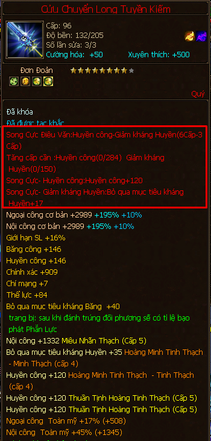
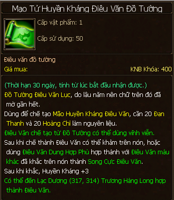
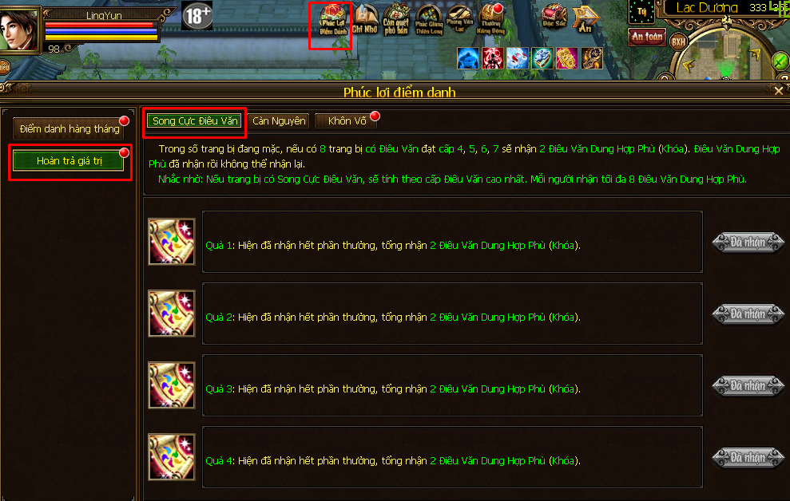

Điêu Văn¶
Điêu văn trang bị là dòng màu đỏ được khắc vào các trang bị nhằm cộng thêm một lượng thuộc tính mà điêu văn đó mang lại (thể lực/trí lực/thân pháp/cường lực/nội lực/giảm kháng/thuộc tính tấn công/kháng).
Trên hình là trang bị đã được khắc 2 dòng điêu văn (Song Cực Điêu Văn): + Huyền Công và Giảm kháng huyền
Màu Sắc Điêu Văn¶
Màu sắc điêu văn ở đây nói đến là màu của mẫu điêu văn trước khi hợp thành điêu văn và khắc vào trang bị.
Màu Đỏ: tăng các loại thuộc tính cơ bản cho nhân vật
- Cường lực
- Nội lực
- Thể lực
- Trí lực
- Thân pháp

Hình ảnh về một mẫu điêu văn màu đỏ
Màu Vàng: tăng các loại thuộc tính tấn công
- Băng công
- Hỏa công
- Huyền công
- Độc công

Hình ảnh về một mẫu điêu văn màu vàng
Màu Xanh Lá (Lục): các loại kháng
- Kháng Độc
- Kháng Hỏa
- Kháng Huyền
- Kháng Băng
Hình ảnh về một mẫu điêu văn màu xanh lá (lục)
Màu Tím: các loại giảm kháng
- Giảm kháng Huyền
- Giảm kháng Băng
- Giảm kháng Độc
- Giảm kháng Hỏa

Hình ảnh về một mẫu điêu văn màu tím
Màu Xanh Lam: các loại phụ trợ và chỉ khắc được vào hạng liên (dây chuyền)
- Vong Vô: tăng điểm sát thương cơ bản cho kỹ năng cơ bản của môn phái (kỹ năng số 1 - quyển tâm pháp số 1; Vd: Bát Quái Chưởng của Võ Đang), tăng tốc độ hồi nộ.
- Minh Tưởng: tăng % sát thương cho kỹ năng 1 - quyển tâm pháp số 2 của môn phái (Vd: Tẩy Tử Bổng Tầm của Nga Mi).
- Ngự Kình: tăng % sát thương cho kỹ năng 1 - quyển tâm pháp số 5 của môn phái (Vd: Ngọc Nữ Xuyên Xoa của Võ Đang).
- Bạo Nộ: tăng % sát thương cho kỹ năng nộ - kỹ năng 1 - quyển tâm pháp số 6 của môn phái (Vd: Thái Uyên Thập Tam Kiếm của Võ Đang).

Hình ảnh về một mẫu điêu văn màu xanh lam
Sỡ dĩ mình đề cập đến màu sắc của các mẫu điêu văn là để dọn đường khi nói về Song Cực Điêu Văn ở phần sau, mà thực chất quá trình song cực chỉ là việc ghép 2 điêu văn khác màu tạo thành 2 dòng khắc lên cùng một món trang bị.
Cách có được mẫu điêu văn:
- Mua trong tiệm KNB khóa: mục Nam Bắc Kỳ Hóa - Tiệm Điêu Khắc.
- Đi phụ bản Tàng Kinh Các.
Hợp Thành Điêu Văn¶
Đọc thông tin ghi trên mẫu điêu văn cần hợp thành để xem cần bao nhiêu
Hoàng chỉ (đi train nhặt được, mua trong thương hội..)

Hình ảnh vật phẩm hoàng chỉ - nguyên liệu hợp thành điêu văn
Đan thanh (phụ bản Tàng Kinh Các, mua của người khác..)

Hình ảnh vật phẩm đan thanh - nguyên liệu hợp thành điêu văn
Điêu văn thuộc tính cần 20 đan thanh, 20 hoàng chỉ.
Điêu văn kháng/giảm kháng cần 60 đan thanh, 60 hoàng chỉ.

Thông tin về số lượng đan thanh và hoàng chỉ để hợp thành điêu văn được ghi trên mẫu điêu văn
Sau khi đủ số lượng nguyên liệu thì tiến hành hợp thành Mẫu điêu văn + Đan thanh + Hoàng chỉ để trở thành điêu văn hoàn chỉnh. NPC Trương Hàng Long - Lạc Dương (317, 314).

Đủ nguyên liệu hoàng chỉ và đan thanh trong túi, bấm Hợp thành điêu văn và bỏ mẫu điêu văn vào, triển!
Sau khi có điêu văn rồi ta tiến hành khắc điêu văn bằng cách dùng vật phẩm Điêu Văn Thực Khắc Dung Tễ

Hình ảnh vật phẩm điêu văn thực khắc dung tễ, đi phụ bản Sát Tinh có thể nhặt được hoặc mua trong tiệm KNB.
- Chọn dòng Khắc Điêu Văn tại NPC Trương Hàng Long.
Cấp Điêu Văn¶
Để cường hóa điêu văn cần tiêu hao vật phẩm Kim Tàm Ti (vòng quay may mắn, bong bóng chúc phúc, kinh hỷ tam liên, vang danh giang hồ, mai khôi tiên tử…). Tại NPC Trương Hàng Long ta chọn Cường Hóa Điêu Văn.

Hình ảnh vật phẩm Kim Tàm Ti
Điêu văn kháng và giảm kháng tốn nhiều Kim Tàm Ti hơn để thăng cấp so với điêu văn tăng thuộc tính cơ bản và thuộc tính tấn công.
| Từ cấp | Đến cấp | Số lượng cần cho loại điêu văn kháng | Số lượng cần cho loại điêu văn giảm kháng | Số lượng cần cho các loại điêu văn khác |
|---|---|---|---|---|
| 1 | 2 | 6 | 6 | 3 |
| 2 | 3 | 27 | 27 | 8 |
| 3 | 4 | 150 | 150 | 50 |
| 4 | 5 | 165 | 261 | 87 |
| 5 | 6 | 165 | ||
| 6 | 7 | 284 | ||
| 7 | 8 | 811 | ||
| 8 | 9 | 2088 | ||
| 9 | 10 | 3570 |
Song Cực Điêu Văn¶
Song Cực Điêu Văn là việc ghép 2 điêu văn khác màu, ban đầu trang bị sẽ có 1 dòng điêu văn trước, sau đó ta tiến hành song cực để khắc thêm một dòng khác vào trang bị.
Về lý thuyết là 2 màu điêu văn khác màu có thể song cực với nhau, tuy nhiên có một số thông tin cần nắm:
- Đồ thủ (áo, mũ, tay, khiên, giày, dép, nịt) chỉ có thể song cực màu đỏ (thuộc tính cơ bản: thể lực/trí lực/nội lực/thân pháp/cường lực) và màu xanh lá (kháng) vì các loại đồ thủ không có mẫu điêu văn màu vàng, màu tím.
- Đồ công chỉ có thể lựa chọn song cực giữa 2 trong 3: màu đỏ (cường lực/nội lực/thân pháp trên trang sức), màu tím (giảm kháng trên trang sức), màu vàng (thần khí, hộ uyển).
- Đồ lưỡng tính (ám khí, long văn, võ hồn, lệnh bài, hào hiệp ấn, hạng liên): màu đỏ (thể lực), màu vàng (huyền công…), màu tím (giảm kháng), màu xanh lá (kháng).
- Hạng liên (dây chuyền) có thể lựa chọn song cực giữa 2 trong 3: màu đỏ (thể lực..), màu xanh lam (vong vô, ngự kình) và màu vàng (huyền công…)
Để thực hiện song cực, ta cần hợp thành mẫu điêu văn mới, sau đó chọn dòng Dung hợp điêu văn tại NPC Trương Hàng Long:
- Trang bị đang có 1 dòng điêu văn.
- Điêu văn mới muốn song cực (phải khác loại với điêu văn đang có trên trang bị).
- Điêu Văn Dung Hơp Phù (Quà phúc lợi hoàn trả giá trị, quà tặng nạp thẻ, vòng quay may mắn).

Hình ảnh vật phẩm Điêu Văn Dung Hợp Phù
Khi trên người đủ 8 món trang bị có điêu văn cấp 4, 5, 6 , 7 thì được nhận tổng cộng 8 điêu văn dung hợp phù miễn phí. Ngoài ra có thể tham gia event quà tặng nạp thẻ, vòng quay may mắn để có thêm.

Đặt trang bị đang có 1 dòng điêu văn, điêu văn dung hợp phù, và 1 điêu văn loại khác màu vào để có thể song cực điêu văn.
Kinh Nghiệm¶
- Khi thay trang bị mới, có thể dùng chức năng chuyển dịch điêu văn để chuyển từ trang bị cũ sang trang bị mới một cách nhanh chóng.
- Muốn tháo điêu văn đang có trên trang bị thì dùng vật phẩm Dung Kim Phấn (phụ bản Sát tinh hoặc mua trong thương hội).
- Thăng cấp điêu văn: nên thăng cấp đều (đều cấp 3, rồi đều cấp 4, cấp 5…) các trang bị để nhận được điểm + đều mà ít tốn Kim tàm ti hơn so với việc dồn tăng cấp vào một trang bị.
- Giai đoạn đầu mới làm acc nên ưu tiên điêu văn màu đỏ (thể lực/thân pháp) lên cấp từ 1 - 7, vì mỗi cấp tăng 30 điểm thể lực/thân pháp lận đó.
- Điêu văn vàng chỉ nên lên từ cấp 1 - 5 trong giai đoạn đầu (cấp 5 được + 100 điểm thuộc tính, từ 6 trở đi chỉ tăng 20 điểm mỗi cấp), nên vẫn ưu tiên lên điêu văn đỏ để nhân vật có máu trâu, thủ trâu.
- Sau đó tùy nghi mỗi người tự lựa chọn phương hướng tăng cấp, đó là kinh nghiệm của mình.
- Song cực điêu văn, lúc có 8 Điêu Văn Dung Hợp Phù miễn phí thì nên tập trung song cực các trang bị lưỡng tính (ám khí, lệnh bài, long văn, võ hồn, hào hiệp ấn) đặc biệt là 2 dòng điêu văn: thể lực + thuộc tính tấn công (băng/huyền/hỏa/độc).
LingYun ghi chép lúc 1:11 28/7/2018